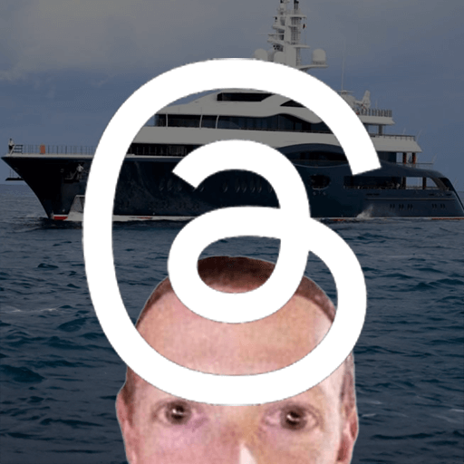
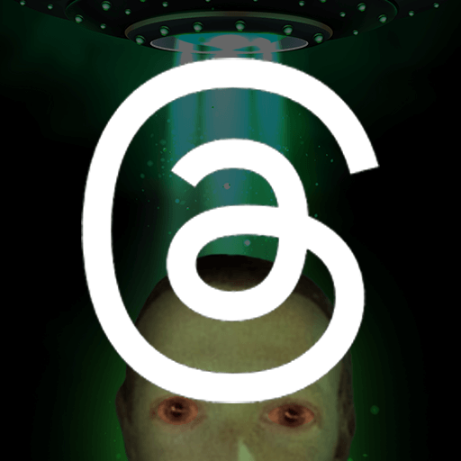
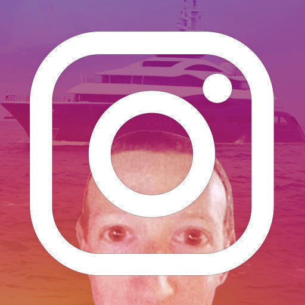
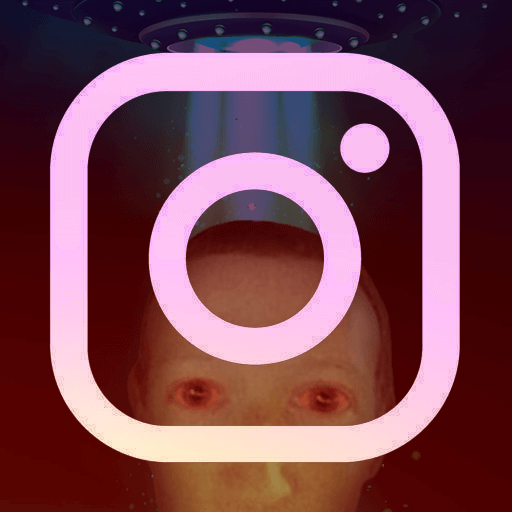

Doomscrolling!

I recently checked my screen time and it was horrible.
I’ve tried using the “limit” feature on iOS, but honestly, it’s useless. On my worst day, I still spent 2.35 hours doomscrolling on Threads alone. That’s not just wasted time, it’s time I should have spent on things that actually matter to me.
After scrolling for hours, I don’t feel entertained, I feel lonely. Everyone is on their phones, but no one is really responding. Social apps feel empty. I miss the days when people built their own websites; that felt like a golden age of the internet.
The internet dones’t feel intresting anymore, I only doom scrolling on a few of social meida apps, mostly Threads and Instagram.
A while ago, the book Careless People was released. I haven’t read it, but I can easily imagine how relevant it is. I recently came across a Harvard report on how toxic social media content sends teens into a dangerous spiral. I see the same thing in my own feed: beauty surgery ads, beauty filters, endless comparison.
I’ve realized that willpower alone won’t defeat addiction. Setting a time limit isn’t enough. One small thing that’s helped is adding a screen time widget to my home screen. Being able to see my usage instantly throughout the day keeps me aware, instead of realizing at night that I wasted another day.
{kind=link}
And I changed the app icon for Threads and Instagram, you can grab it if you want.
{kind=link}



